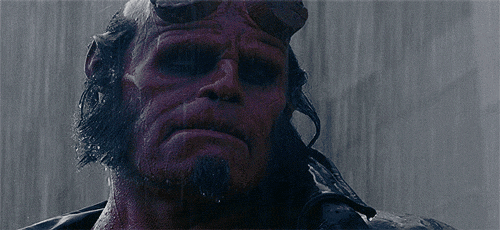

The reason why I am so angry
Guess what, I hate Guillermo del Toro. :,vA few time Ago I've been reading about the posible third part of Hellboy. Guillermo said it could be posible, so I did not cry like a little girl since the las scene of Hachiko (oh god!). That doesn’t mean that Guillermo del Toro won’t still talk about the project on his own terms, as he stated that he and frequent collaborator Ron Perlman had discussed the possibility of Hellboy III. Though time and time again studio involvement has been pegged as non-existent, it seems even more concrete this time around, thanks to the "indefinite hold" that Pacific Rim 2 has been placed into by Universal Studios. With that project in danger of cancellation, the possible bargain that would have lead to Hellboy III’s production is just as dead, seeing as that film was dependent on Pacific Rim 2 delivering enough box office to justify it. Honestly, the more that Guillermo del Toro talks about making weird little films, as he does in his conversation with Horowitz, the more it sounds like he should take a sort of blockbuster sabbatical to focus on those sorts of projects. With a smaller budget, and less studio interference, del Toro will be allowed to get his artistic juices flowing without interruption. This could lead to more projects like Pan’s Labyrinth that gain critical acclaim, as well as a broad movie-going fanbase. In addition, his fan base can strengthen / grow organically to the point where he may be able to transcend his reputation as a "genre" filmmaker, thus granting him access to bigger budgets and less difficulty green-lighting projects.
Then my heart woulb be smached with a hammer. The reason 100% of suring "Hellboy 3 wont Exist." Shitty damm day